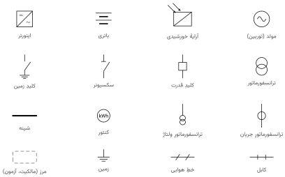
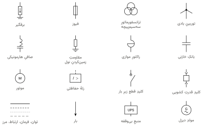

پیوست C — نمادهای نقشه و قراردادهای نمودارِ تکخطی
این پیوست نمادها و قراردادهایی را که نقشهها و نمودارهای کتاب به کار بردهاند یکجا میآورد. نمادها آموزشیاند: برای این کتاب کشیده شدهاند و از پایگاهِ نمادهای IEC 60617 (STD-110) نقل نشدهاند. قاعدههای تهیهٔ مدرک از IEC 61082-1:2014 (STD-111) و ساختارِ نامِ مرجع از IEC 81346-1:2022 (STD-094) پیروی میکند. پروژهٔ واقعی برگهٔ راهنمای نمادهای خودش را در استانداردِ نقشهکشیِ پروژه تعریف میکند و هر نقشه به آن ارجاع میدهد (بخش 23.2.3).
C.1 نمادهای پایه

C.2 نمادهای دیگر و نوعِ خط

| نماد | کاربرد در کتاب | نکته |
|---|---|---|
| مولد و توربینِ بادی | واحدهای بادی در تکخطی و جانمایی | تکخطی یک واحد یا گروهی از واحدها را نشان میدهد؛ تعداد کنارش نوشته میشود |
| آرایهٔ خورشیدی و اینورتر | بلوکهای فتوولتائیک | مرزِ DC و AC در اینورتر است |
| باتری | ذخیرهساز در سناریوی S1 | ظرفیت با MWh و توان با MW کنارش |
| ترانسفورماتورِ دو و سه سیمپیچه | ترانسفورماتورهای اصلی و واحد | گروهِ برداری، مثلاً YNd11، و MVA کنارش |
| کلیدِ قدرت، کشویی، سکسیونر، کلیدِ زمین، کلیدِ قطع زیرِ بار | سلولهای تابلو | حالتِ عادی (باز یا بسته) همان است که نقشه میکشد |
| ترانسفورماتورِ جریان و ولتاژ | اندازهگیری و حفاظت | نسبت، کلاس و هستهها در فهرستِ تجهیزات (فصل 26) |
| رلهٔ حفاظتی | تابعِ حفاظت | پیوندِ فرمان با خطچین تا کلیدی که قطع میکند |
| کنتور | مرزِ اندازهگیریِ درآمد و بهرهبرداری | M1 تا M4 در فصلِ ۱۸ |
| بانکِ خازنی، راکتور، صافی | جبرانسازی و کیفیتِ توان | Mvar و بسامدِ تنظیم کنارش (فصل 27) |
| مقاومتِ زمینکردنِ نول، برقگیر، زمین | زمینکردن و حفاظت در برابرِ اضافهولتاژ | مقدارِ مقاومت و زمانِ تحمل کنارش |
| منبعِ بیوقفه، مولدِ دیزل، موتور، بار | سامانهٔ کمکی | فهرستِ بار در فصلِ ۲۳ |
C.3 رنگ و نوعِ خط در نمودارهای کتاب
| موجودیت | رنگ | نوعِ خط در نمودارهای داده |
|---|---|---|
| باد | آبی | پیوسته |
| فتوولتائیک | نارنجی | خطچینِ بلند |
| باتری | سبز | خطچین و نقطه |
| بار، سمتِ شبکه | بنفش | نقطهچینِ ریز |
| تلف، خطا، کاهشِ تولید، خطر | قرمز | خطچینِ کوتاه |
| حد و آستانه | خاکستریِ تیره | خطچینِ بلند و نازک |
| مرزِ مالکیت یا آزمون | خاکستریِ تیره | خطچینِ بلند با گوشهٔ گرد |
هر سری در نمودار هم رنگ دارد و هم نوعِ خط، تا در چاپِ سیاهوسفید یا برای خوانندهای که رنگها را از هم جدا نمیبیند هم خوانا باشد. نمودارِ دو سری یا بیشتر راهنما دارد و فقط یک محورِ عمودی. نمودارهای جریان از راست به چپ کشیده میشوند تا با جهتِ خواندنِ فارسی بخوانند. محورهای عددی مانندِ همهٔ نمودارها از چپ به راستاند.
C.4 نامِ مرجع
هر تجهیز یک نامِ مرجع دارد که در تکخطی، جانمایی، فهرستِ کابل، برچسبِ محل و سامانهٔ مدیریتِ نگهداری یکی است (بخش 23.2.3، فصل 38). ساختارِ IEC 81346-1 سه جنبه دارد:
| پیشوند | جنبه | پرسش | نمونه در نیروگاهِ P |
|---|---|---|---|
| = | کارکرد | چه میکند؟ | =WS1 رشتهٔ بادیِ ۱؛ =T2 ترانسفورماتورِ اصلیِ ۲ |
| − | محصول | چه چیزی است؟ | =T2-Q1 کلیدِ قدرتِ ترانسفورماتورِ ۲ |
| + | مکان | کجاست؟ | +H03 اتاقِ تابلوی ۳۳ کیلوولت |
حرفِ نوعِ محصول (مثلاً Q برای کلیدزنی) از جدولِ ردهٔ استانداردِ نامگذاریِ پروژه میآید و در برگهٔ راهنمای نمادها نوشته میشود. نامهای بدشکل (بیپیشوند، حروفِ کوچک، فاصله در میان) با برنامهٔ وارسیِ فصلِ ۲۳ پیدا میشوند (بخش 23.4.2).
C.5 قراردادهای نمودارِ تکخطی
- جهت. شبکه بالا و نیروگاه پایین. ولتاژ از بالا به پایین کم میشود. سطحهای ولتاژ با خطِ افقیِ شینه و برچسبِ kV جدا میشوند.
- مرزها. مرزِ مالکیت، بهرهبرداری، اندازهگیری و آزمون با خطچینِ گرد کشیده و نامگذاری میشوند (بخش 23.2.5). نقطهٔ اتصال روی تکخطی برچسب دارد.
- حالتِ عادی. هر کلید در حالتِ عادیِ بهرهبرداری کشیده میشود. نقطهٔ بازِ عادی برچسب دارد.
- داده کنارِ نماد. توان، ولتاژ، گروهِ برداری، امپدانس، نسبتِ ترانسفورماتورِ جریان و سطحِ مقطعِ کابل کنارِ نماد میآیند، یا شمارهٔ ردیف در فهرستِ تجهیزات.
- یک نماد، یک نام. هر نماد نامِ مرجع دارد. همان نام در فهرستها و برچسبِ محل است.
- ارجاع به نقشههای دیگر. پیکانِ ادامه با شمارهٔ نقشه و مختصاتِ خانه. تکخطی نقشهٔ حفاظت یا فرمان نیست؛ به آنها ارجاع میدهد.
- بازنگری. ابرِ بازنگری دورِ هر تغییر، با شمارهٔ بازنگری در مثلث. جدولِ بازنگری در جدولِ عنوان (بخش 38.2.3).
C.6 جدولِ عنوانِ نقشه
| فیلد | محتوا | نمونه |
|---|---|---|
| شمارهٔ مدرک | طرحِ شمارهگذاریِ پروژه (بخش 38.2.1) | PLP-ELE-DWG-0005 |
| بازنگری و وضعیت | حرف و عددِ بازنگری با وضعیت | C، IFC |
| عنوان | دو یا سه سطرِ دقیق | نمودارِ تکخطیِ پست، بخشِ ۳۳ کیلوولت |
| تهیه، وارسی، تأیید | نام و تاریخِ سه نفرِ جدا | سه امضا |
| مقیاس و اندازهٔ برگه | «بیمقیاس» برای تکخطی | A1 |
| مرجعها | برگهٔ راهنمای نمادها، نقشههای پیوسته | PLP-ELE-DWG-0006 |
| جدولِ بازنگری | شماره، تاریخ، شرح، تهیه، تأیید | یک سطر برای هر بازنگری |
C.7 فهرستِ وارسیِ نمودارِ تکخطی
نمادها و قراردادهای این پیوست آموزشیاند. نقشههای اجرایی را مهندسِ دارای صلاحیت بر پایهٔ استانداردِ نقشهکشیِ پروژه و الزامهای بهرهبردارِ شبکه تهیه، وارسی و تأیید میکند. بهرهبردارِ شبکه ممکن است برای بخشِ اتصال نمادها و قالبِ خودش را بخواهد (فصل 54).